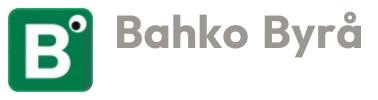

N
1 m
H
HEMVIST
Mäklare i Stockholm
Till salu
Köpa
Hyra
Om oss
Kontakt
Södermalm · Årsta · Enskede
Skapad av

Stockholm, Årsta
Radhus vid
Årstaviken
5 rum och kök
3 sovrum
Trädgård
—
Ett modernt radhus med öppen planlösning och egen trädgård, ett stenkast från vattnet.
Utgångspris
8 950 000 kr
Boka visning
→
Bottenvåning
Övervåning
Dag
Natt
3D-vy
Planritning
Återställ vy
Boarea
—
3 sovrum
Badrum och gäst-wc
Egen trädgård
Laddar